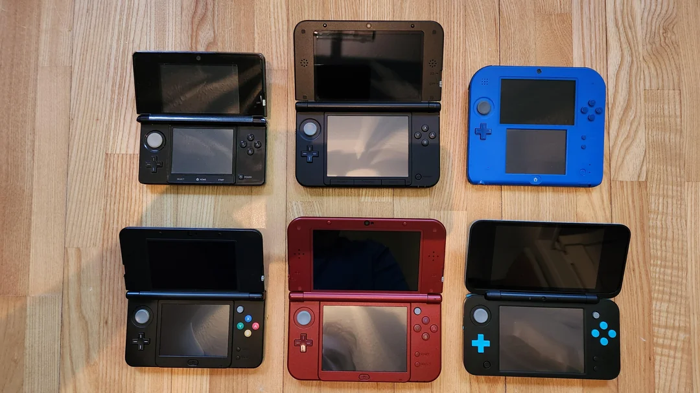
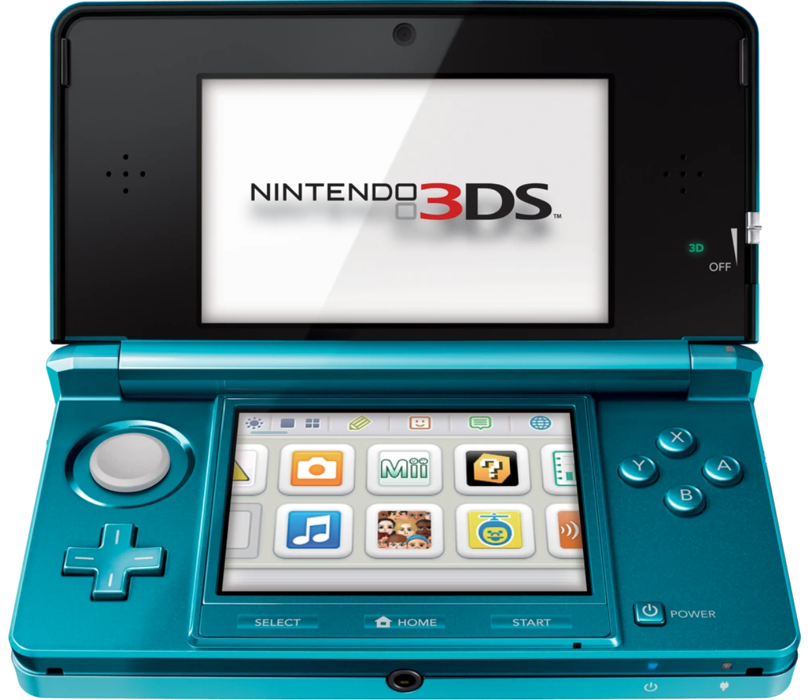
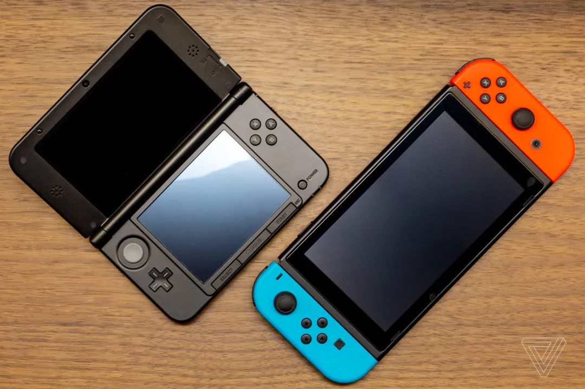

History
The 3DS is a handheld video game console created by Nintendo. The 3DS was released in 2011 as a successor of the Nintendo DS.
Announcement & Release Date
The Nintendo 3DS was first officially announced on March 23, 2010. Three months later, the consolde was fully revealed at the annual video game industry trade event called Electronic Entertainment Expo (E3) on June 15, 2010.
The Nintendo 3DS was originally launched on February 26, 2011 in Japan. It was later released in Europe, North America, and Australia the following month. At launch, the console was available in two colors, "Aqua Blue" and "Cosmo Black". The 3DS' sales initially struggled, in part due to the device's high price tag of US $249.99 which was the highest ever for a Nintendo handheld.
Within a year of the 3DS' launch, Nintendo lowered the device's price to US $169.99 on July 28, 2011. As a consolation for early adopters, the 3DS Ambassador Program was launched. This program offered 20 free classic games (including NES and Game Boy Advance titles) to players who accessed the 3DS eShop before August 21, 2011.
3DS Console Family
As previously stated, the original 3DS was released in 2011. Over the course of the 3DS' lifetime, Nintendo released several updated versions of the console. By the end of its run, the 3DS console family included 6 modles.
The first upgraded version to be released was the Nintendo 3DS XL. The 3DS XL was larger than the original 3DS, reportedly featuring screens that were 90% larger than the orginal device's. The 3DS XL was officially announced during a Nintendo Direct on June 21, 2012 and released worldwide later that year.
On October 12, 2013, the Nintendo 2DS was released. This device was capable of playing Nintendo DS and 3DS games, though the 3D functionality was removed from the device. This model was the cheapest in the lineup and marketed towards young children. In contrast to the clamshell design typical of the DS and 3DS systems, the Nintendo 2DS standsout for its flat and sturdy "slate" style design.
Next, Nintendo released the New Nintendo 3DS on October 11, 2014 in Japan (reaching global markets by September 2015). The New Nintendo 3DS featured improved hardward including but not limited to: upgraded processors, increased RAM, an analog C-Stick, two additional shoulder buttons, and more. The New Nintendo 3DS also has its own XL variant.
Next, Nintendo released the New Nintendo 3DS on October 11, 2014 in Japan (reaching global markets by September 2015). The New Nintendo 3DS featured improved hardward including but not limited to: upgraded processors, increased RAM, an analog C-Stick, two additional shoulder buttons, and more. The New Nintendo 3DS also has its own XL variant. Both sizes were released at the same time in Japan though in North America only the XL variant was released originally. According to Wikipedia, "...Nintendo of America representative Damon Baker explained that they did not want to confuse consumers." The standard sized model was released in North America on September 25, 2015 after a social media campaign called upon Nintendo to do so.
The last model in the 3DS console line to be released was the New Nintendo 2DS XL. The New 2DS XL was released in the summer of 2017. Akin to its predecessor, the Nintendo 2DS, this new handheld lacked an autostereoscopic 3D display. Instead of adopting the 2DS' "slate"-like design, however, the New 2DS XL features a folding, clampshell design traditional of Nintendo's DS and 3DS systems. "As with the New Nintendo 3DS, it [the New 2DS XL] has an updated processor, an analog pointing stick known as the C-Stick, and additional shoulder triggers, and near-field communications (NFC) support for Amiibo for use in compatible games" ("New Nintendo 2DS XL").
Comparing 3DS Consoles
The following table compares aspects of each device in the 3DS console family.
| Console Name | Nintendo 3DS | Nintendo 3DS XL | Nintendo 2DS | New Nintendo 3DS | New Nintendo 3DS XL | New Nintendo 2DS XL |
|---|---|---|---|---|---|---|
| Image of Console |  |  |
 |
 |
 |
 |
| Release Date | (JP) Feb 26, 2011 (NA) Mar 27, 2011 |
(JP) July 28, 2012 (NA) Aug 19, 2012 |
(JP) Feb 27, 2016 (NA) Oct 12, 2013 |
(JP) Oct 25, 2014 (NA) Sept 25, 2015 |
(JP) Oct 11, 2014 (NA) Feb 13, 2015 |
(JP) July 13, 2017 (NA) July 28, 2017 |
| Price at Launch | US $249.99 | US $199.99 | US $129.99 | US $219.99 | US $199.99 | US $149.99 |
| 3D Functionality | Yes | Yes | No | Yes | Yes | No |
End of Lifetime
In 2016, Nintendo revealed their next console, the Switch. As a hybrid console capable of functioning as both a home console (when docked to a television) and a handheld device, the Switch was not posed as a direct successor to the 3DS. The two consoles coexisted on the market for a few years until, after a run of 9 years, the Nintendo 3DS was officially discontinued on September 16, 2020.
Later, the 3DS eShop was closed on March 27, 2023 and Nintendo Network online services were discontinued on April 8, 2024. With the 3DS' online services cut off and its digital storefront closed, the lifetime of the 3DS family reached its offical end.
Citations
Sources
- "History of: 3DS" (Byte) - https://www.ballstatedaily.com/byte/article/2023/12/history-of-3ds
- "Nintendo 3DS" (Wikipedia) - https://en.wikipedia.org/wiki/Nintendo_3DS#
- "New Nintendo 3DS" (Wikipedia) - https://en.wikipedia.org/wiki/New_Nintendo_3DS
- "New Nintendo 2DS XL" (Wikipedia) - https://en.wikipedia.org/wiki/New_Nintendo_2DS_XL
Images
- Hero Image - https://www.theguardian.com/technology/gamesblog/2010/jun/15/nintendo-3ds-hands-on
- Nintendo 3DS - https://nintendo.fandom.com/wiki/List_of_Nintendo_handhelds?file=Nintendo_3DS_%28Blue_Model%29.png
- Nintendo 3DS XL - https://nintendo.fandom.com/wiki/List_of_Nintendo_systems?file=Nintendo_3DS_XL_Black.png
- Nintendo 2DS - https://betanews.com/2013/08/28/nintendo-2ds-the-console-makers-best-move-in-years/
- New Nintendo 3DS - https://www.nintendo.com/en-gb/Hardware/Nintendo-3DS-Family/New-Nintendo-3DS/New-Nintendo-3DS-947717.html?srsltid=AfmBOorI5aCj9UpqXsHdC7wmVNxkk5fmqjwXZNRfljDGrxBZPU9eZO5v
- New Nintendo 3DS XL - https://www.nintendo.com/en-gb/Hardware/Nintendo-3DS-Family/New-Nintendo-3DS-XL/New-Nintendo-3DS-XL-955921.html?srsltid=AfmBOooPrTKz8PryAieI0cHyez5l-7L-oA31C7_4EE9u0DCRyHiyhT0f
- New Nintendo 2DS XL - https://nintendo.fandom.com/wiki/New_Nintendo_2DS_XL?file=New+Nintendo+2DS+XL+-+Hardware+020.png
- "All Game Boy, DS, and 3DS models" (Reddit) - https://www.reddit.com/r/gamecollecting/comments/1cp90f8/all_game_boy_ds_and_3ds_models/
- Nintendo 3DS XL and Switch - https://www.theverge.com/2018/5/16/17357848/nintendo-3ds-switch-upgrade
{kind=link}
{kind=link}
{kind=link}
Video
- "Nintendo 3DS: Promo Trailer - E3 2010" (IGN, Youtube) - https://youtu.be/83GoGHBkdyg?si=ft_FBAOpg5jyM7Eb